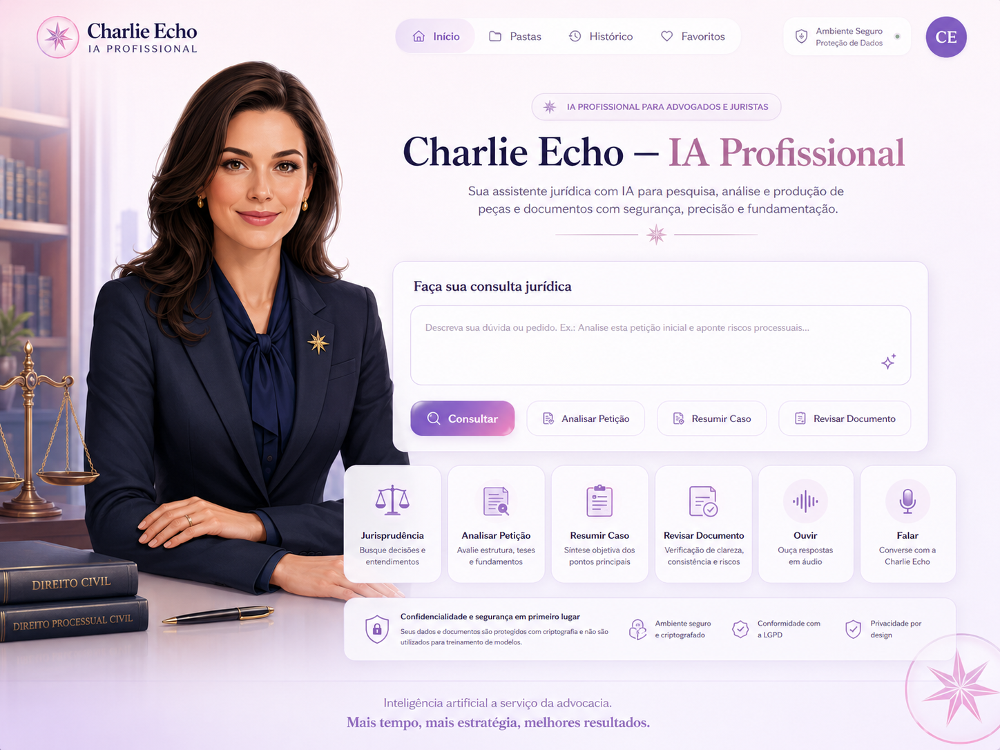

Ambiente seguro
As integrações reais devem ocorrer por backend/API segura e nunca com chaves expostas no front-end.
Versão profissional da Charlie Echo, inspirada nos botões da estudante e adaptada para advogados, juristas e produção assistiva responsável.

A imagem ao lado foi incluída como referência visual da Charlie Echo profissional: identidade adulta, uniforme, botões de fala e contexto jurídico.
Área preparada para resposta jurídico-assistiva. A versão pública organiza a consulta no navegador. A análise real deve passar por backend seguro, governança humana e revisão habilitada quando cabível.
Quando o documento ou resposta atingir tamanho médio, a Charlie Echo deve sugerir entrega por link/pacote de download, sem poluir a área de trabalho.
Apoio documental, jurídico-assistivo, organização de repertórios, preparação de pacotes, leitura responsável e preservação de autoria.
Não substitui advogado humano, juiz, perito, professor ou autoridade competente.
As integrações reais devem ocorrer por backend/API segura e nunca com chaves expostas no front-end.
Consulta, análise preliminar, revisão documental e organização de hipóteses para revisão humana.
A última instância é humana e os limites públicos continuam preservados.